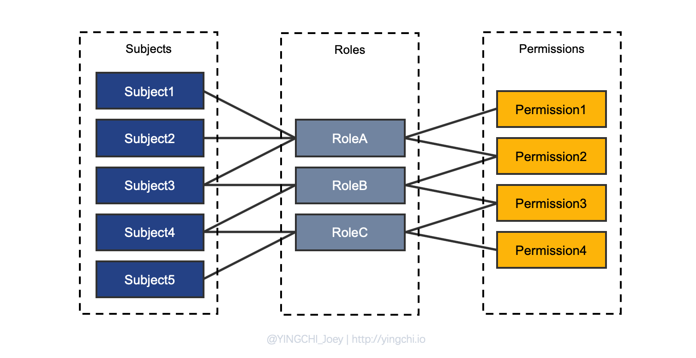
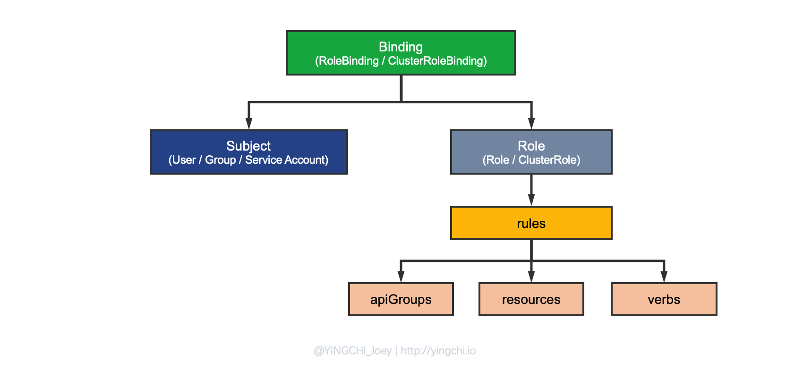
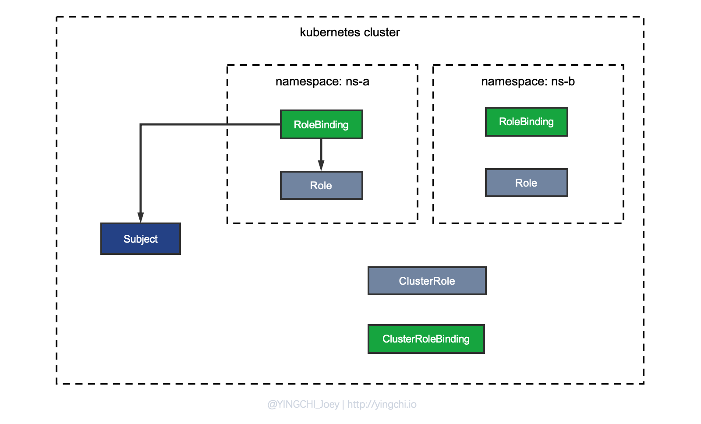
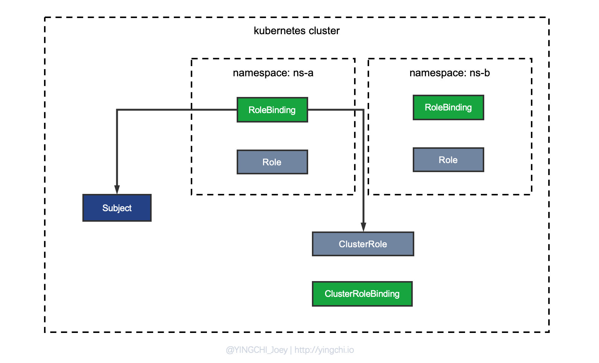
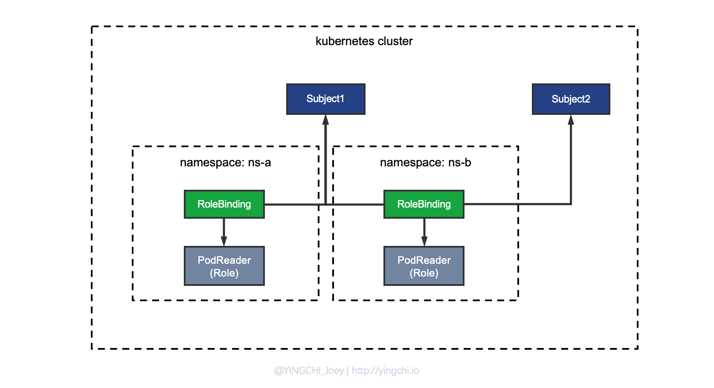
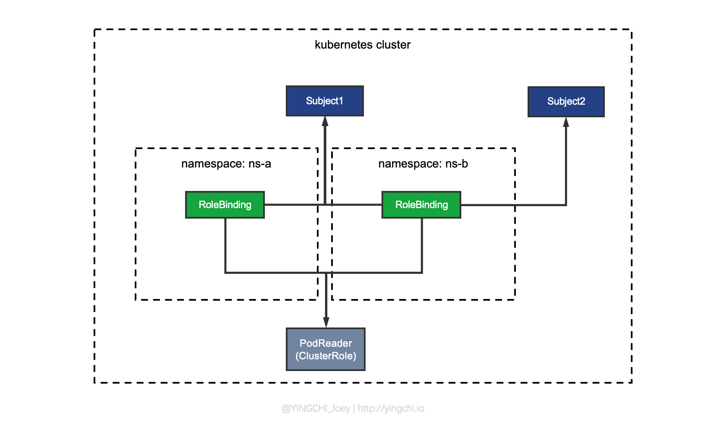
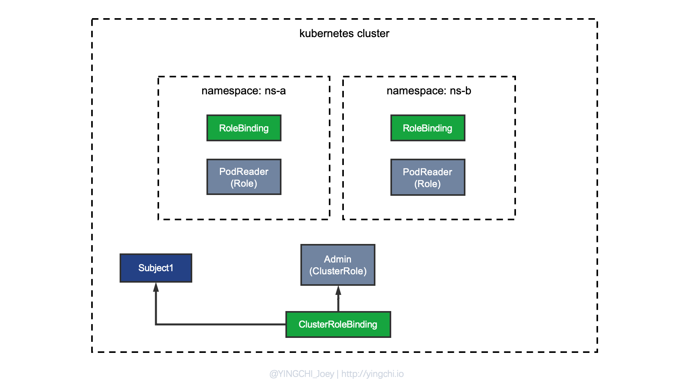

一文读懂 Kubernetes RBAC 机制
之前在做 PaaS 平台开发时涉及到租户的权限管理，考虑到 Kubernetes 默认提供了 RBAC（基于角色的访问控制）机制，于是想如何利用好 Kubernetes 的 RBAC 来实现。但是开始学习这块儿知识的时候还是遇到了一些问题，比如 Role 和 ClusterRole，Role Binding 和 ClusterRoleBinding，很多概念是比较模糊的，随着后来深入的学习了解和实践才算理清它们之间的关系，这篇文章就是分享一下这期间学到的内容。
什么是 RBAC？
RBAC（基于角色的访问控制）
RBAC，Role-Based Access Control，即基于角色的访问控制，通过自定义具有某些特定 Permission 的 Role，然后将 Role 和特定的 Subject（user，group，serviceaccounts…)关联起来已达到权限控制的目的。
RBAC 中有三个比较重要的概念：
- Role：角色，本质是一组规则权限的集合，注意：RBAC 中，Role 只声明授予权限，而不存在否定规则；
- Subject：被作用者，包括 user，group，通俗来讲就是认证机制中所识别的用户；
- RoleBinding：定义了“Role”和“Subject”的绑定关系，也就是将用户以及操作权限进行绑定；
RBAC 其实就是通过创建角色(Role），通过 RoleBinding 将被作用者（subject）和角色（Role）进行绑定。下图是 RBAC 中的几种绑定关系：

Kubernetes RBAC
现在以 Kubernetes 的视角重新来看 RBAC 的实现。
Kubernetes 中实现 RBAC 角色创建、角色绑定整个流程还是比较清晰的，RBAC 的配置都是以资源配置的形式呈现给管理员，我们只需要定义一些配置文件即可，当然在这其中会涉及到对一些配置的理解。首先来看 Kubernetes 中 RBAC 配置关系图：

如图可知，实现 Kubernetes 的自定义 RBAC 过程，主要涉及到几个概念，其实一开始已经提到过了，这不过在 Kubernetes 中定义了更具体的概念，这是重点需要关注的。
Subject
主体，kubernetes 中的 Subject 包括了 User、Group、Service Account，前两个好理解，Service Account 其实就是区别开 User Account 的，Kubernetes 中的资源也是可以当做一个 Subject 的，比如一个 Pod 需要操作集群资源时，它采用的就是 Service Account。
Kubernetes 并没有实现对于 User Account 的直接管理，需要管理员自行手动创建 User Account，本文不针对这一块儿展开说明，大家可以查阅相关文章进行学习。
Role
角色，角色本质就是一组规则权限的集合，通过与具体的 Subject 绑定，从而赋予 Subject 相应的一组权限。
在 Kubernetes 中，Role 分为两类：
- Role：角色，可以理解为 Namespace Role，Role 在定义时要指定 Namespace，即这个 Role 是定义在 Namespace 内部，因此它所定义的规则权限集合也是针对于其定义所在的 Namespace 下的资源。
- ClusterRole：集群角色，顾名思义，这种类型的 Role 是定义在整个 Cluster 下的，定义 Cluster Role 时不需要指定具体的 Namespace。
Role 示例：
kind: Role
apiVersion: rbac.authorization.k8s.io/v1
metadata:
namespace: ns-a # 定义于 namespace 下
name: pod-reader
rules:
- apiGroups: [""]
resources: ["pods"]
verbs: ["get", "watch", "list"]
ClusterRole 示例：
kind: ClusterRole
apiVersion: rbac.authorization.k8s.io/v1
metadata:
name: pod-reader
rules:
- apiGroups: [""]
resources: ["pods"]
verbs: ["get", "watch", "list"]
注意：ClusterRole 并不代表权限控制的范围是整个 Cluster，还与之后要讲的 Binding 类型有关系，这里的 ClusterRole 应该理解为一种全局量，可以作用于某个 Namespace 下（起到复用的作用），可以作用于 Cluster 范围下。
每个 Role 在定义时关键的一步要指定该 Role 所具有的 rules，Kubernetes 中权限规则需要指定以下几点：
- apiGroups：资源组，
""缺省为 core 组资源，其它诸如 apps 等； - resources：资源，比如 pods、deployments、services、secrets 等；
- verbs：操作动词，如 get、list、watch、create、delete、update 等。
Binding
绑定，单从概念上很好理解，就是把定义好规则权限的 Role 绑定到指定的 Subject 上，从而赋予 Subject 相应的一系列权限。
kubernetes 中 Binding 分为两种：
- RoleBinding：绑定 Role/ClusterRole 到 Subject，生效于具体的 Namespace 范围资源；
- ClusterRoleBinding：绑定 ClusterRole 到 Subject，生效于 Cluster 范围资源；
再次强调：
Kubernetes 中权限控制的范围（Namespace/Cluster）是由 Binding 的类型决定的，而不是根据 Role 和 ClusterRole 决定的，这一点一定要记住。
作用于 Namespace 范围的 RBAC 方案分析
方法1：Role + RoleBinding 的组合

如上图，这种方式是比较直观的，因为之前说过 Kubernetes 中的 Role 应该理解为 Namespace Role，它是定义在 Namespace 下面的，因此如果要实现 Namespace 范围内的 Subject 与 Role 的绑定，无非就是通过配置一个 RoleBinding 把两者联系起来。
配置示例：
kind: RoleBinding
apiVersion: rbac.authorization.k8s.io/v1
metadata:
name: pods-reader-binding
namespace: ns-a
subjects:
- kind: User
name: yingchi
apiGroup: rbac.authorization.k8s.io
roleRef:
kind: Role
name: pod-reader
apiGroup: rbac.authorization.k8s.io
方法2：ClusterRole + RoleBinding 的组合（推荐）

一听 ClusterRole，很多朋友会潜意识认为是关于集群范围下的权限控制，但是实际上，权限控制的范围和 Role 的类型没有直接的关系，ClusterRole，它的本质是一个定义在全局的角色，可以作用于 Namespace 下，可以被多个 Namespace 复用，也可以作用于 Cluster 下。
我们现在需要实现 Namespace 范围内绑定 Subject & Role，就是将 ClusterRole 的权限范围控制在 Namespace 层面，因此采用 RoleBinding 将 Subject 与 ClusterRole 即可实现。
配置示例：
kind: RoleBinding
apiVersion: rbac.authorization.k8s.io/v1
metadata:
name: pods-reader-binding
namespace: ns-a
subjects:
- kind: User
name: yingchi
apiGroup: rbac.authorization.k8s.io
roleRef:
kind: ClusterRole
name: pod-reader
apiGroup: rbac.authorization.k8s.io
方法分析
为什么会推荐使用 ClusterRole + RoleBinding 的组合呢？
思考一个问题，假如设计一个 PodReader Role，作用就是有 get/list/watch 当前 Namespace 下 Pod 的权限，如果两个 namespace 都需要这么一个 Role，那么应该怎么设计呢？
采用上面讲的第一种方法的话，每个 namespace 需要定义一个 PodReader 的 Role：

这样做有个很明显的缺点，PodReader 的规则权限其实在每个 Namespace 下都是一样的，但是由于 Role 的限制，必须在每个 Namespace 下单独定义，资源浪费，过程也不优雅，如何去复用 PodReader 这个 Role 呢？于是，才有了第二种方法：

如图，也就是将 PodReader 定义为 ClusterRole，然后通过 RoleBinding 在不同 Namespace 下绑定不同的 Subject 到同一个 ClusterRole。
小结
如果自定义的 Role 在很多个 Namespace 中都会用到，那么推荐采用 ClusterRole + RoleBinding 的组合，实现 Role 的复用，如果真的是某个 Namespace 必须要单独定义的私有 Role，再去用 Role + RoleBinding 的组合，但是这样的话 Role 就会比较局限。
作用于集群范围的 RBAC 方案分析
方案只有一个，就是通过 ClusterRoleBinding + ClusterRole：

注意我在图中画的 ClusterRoleBinding 的位置，之前在介绍 Binding 概念的时候就提到一句话：Kubernetes 中权限控制的范围（Namespace/Cluster）是由 Binding 的类型决定的，而不是根据 Role 和 ClusterRole 决定的。想要实现作用于集群范围的 RBAC，一定是通过 ClusterRoleBinding，并且要注意的是，通过 ClusterRoleBinding 方式进行绑定时，只允许绑定到 ClusterRole 角色，可以简单理解为全局方法只能去用 ClusterRole 这种全局量。
配置示例：
kind: ClusterRoleBinding
apiVersion: rbac.authorization.k8s.io/v1
metadata:
name: cluster-admin-biding
subjects:
- kind: User
name: yingchi
apiGroup: rbac.authorization.k8s.io
roleRef:
kind: ClusterRole
name: cluster-admin
apiGroup: rbac.authorization.k8s.io
总结
关于 Kubernetes RBAC 机制的学习，首先要从基本的 RBAC 概念出发，理解 RBAC 这种权限管理机制的本质思想，即主体-角色-权限三者的关系，在此基础上，针对 Kubernetes 对于 RBAC 的实现进行理解学习，核心是要理解 Role 和 ClusterRole 的本质概念与作用，比如为什么在复用角色时要使用 ClusterRole。然后，深刻理解 RoleBinding 和 ClusterRoleBinding 的区别，要记住，Kubernetes RBAC 中对于权限控制的范围不是由 Role 决定的，而是由 Binding 的类型决定的。